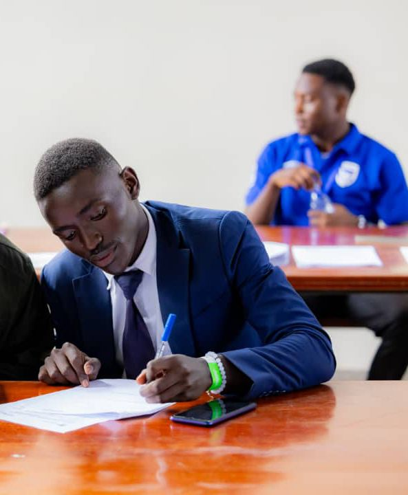

It's a championship of ideas — not a championship of sport.
The Stanbic National Schools Championship (NSC) is Uganda's flagship school-level innovation and entrepreneurship programme, run by Stanbic Bank Uganda since 2015. Despite the name, there is no ball, no pitch, and no scoreboard for goals — the competition is judged on problem-solving, prototypes, and business ideas.
Innovation and entrepreneurship, not athletics.
The National Schools Championship is part of Stanbic Bank Uganda's Corporate Social Investment programme. It's built to nurture entrepreneurial thinking among secondary and vocational school students, while equipping their teachers with practical innovation skills — with the explicit goal of shifting young Ugandans from job-seeking to job-creation.
Students don't pitch business plans for applause. They build things: irrigation sensors, financial literacy tools, community health solutions, assistive devices — projects judged for real market viability, not classroom polish. The programme leans into Uganda's competency-based curriculum, emphasising STEM, critical thinking, creativity, collaboration and problem-solving.
Why the confusion happens: "Championship" reads as a sports word, and past seasons have even been branded with tournament language like "Battle of the Champions." But the actual competition format is a national innovation challenge — schools submit projects, regional judging narrows the field, and finalist teams attend a residential bootcamp before a grand finale pitch in front of judges and industry mentors.
From classroom idea to national finale.
Nationwide innovation challenge
Hundreds of secondary and vocational schools enter, with student teams working together to develop solutions to practical problem scenarios set by the programme.
Regional judging & appraisal
Judges assess whether student-led innovations can move beyond classroom concepts into commercially viable solutions, narrowing hundreds of entries down to a small group of regional finalists.
The residential bootcamp
Selected finalist teams attend a multi-day residential bootcamp — training in entrepreneurship, financial literacy, personal development and character building — where they refine their prototype and present it to mentors at a bootcamp prototype showcase.
The grand finale
A handful of finalist schools pitch live in Kampala for a multi-million-shilling prize pool, with winning teams receiving cash, equipment for their schools, and mentorship to carry their idea further.

Bootcamp Prototype Showcase — published on Stanbic Bank Uganda's official YouTube channel.
This is where finalist teams, including Trinity's, present their working prototypes to mentors and judges after the residential bootcamp. Once you share the exact video link, we'll swap this card for a real embed pointing straight at it.
Trinity, at the bootcamp prototype showcase.
As a national finalist, Trinity worked with his team through the regional judging process and into the residential bootcamp — the same format hosted in past seasons at Gayaza High School — where finalist teams spend a week refining their idea into a working prototype before presenting it at the bootcamp's prototype showcase.
That showcase — filmed and published on Stanbic Bank Uganda's YouTube channel — is where teams defend their build in front of mentors and judges, the same discipline and composure under pressure that Trinity now brings to running Emtrixz Technology.


A note on sourcing: the facts on this page about how the NSC runs — its launch year, reach, stages, and bootcamp format — are drawn from Stanbic Bank Uganda's own programme site and independent Ugandan press coverage. The specific YouTube video titled "Bootcamp Prototype Showcase" lives on Stanbic Bank Uganda's official channel; send its exact link and we'll swap in the real embed and pull the specific details of what Trinity presented, rather than the general placeholder above.